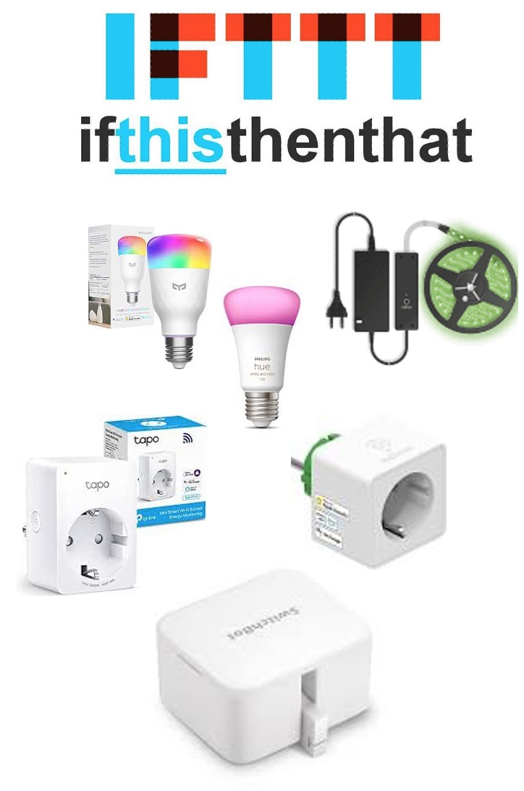
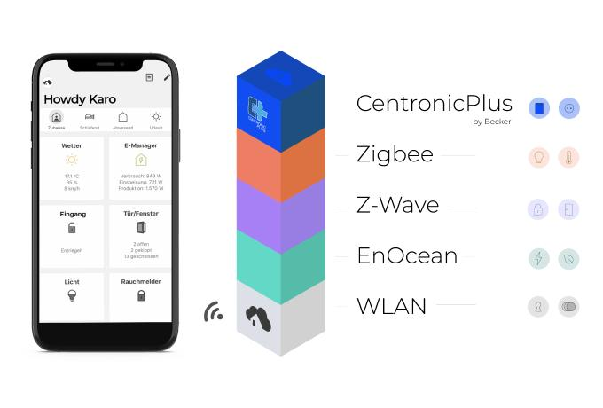

🏡 Smart Home Ansteuerung bei Feuerwehr Einsatz Alarm 🚨
Mit unserem Service ist es auch möglich, verschiedene Smart Home Systeme zu steuern und so im Falle eines Feuerwehr- Einsatz-Alarms eine Vielzahl von automatisierten Aktionen zu starten, die den Einsatzablauf erheblich verbessern und beschleunigen können.
Funktionen und Möglichkeiten:
-> Automatische Beleuchtung: Bei einem Alarm können sofort die Lampen eingeschaltet, um bei einem Alarm in der Nacht schnell den Weg zu erleichtern.
-> Garagentoröffnung: Das Garagentor oder das Hoftor öffnet sich automatisch, sodass die Einsatzkraft ohne Verzögerung zum Gerätehaus fahren kann.
-> Benachrichtigungen: Unser System versendet automatisch Mitteilungen an die Einsatzkräfte, um diese schnell und zuverlässig zu informieren.
-> Sprachansagen mit Amazon Alexa: Der Amazon Lautsprecher "Alexa" liest das Einsatzstichwort vor, sodass die Einsatzkräfte sofort wissen, worum es geht.
Die Einsatzmöglichkeiten unseres Wachalarm-Webhooks sind nahezu unbegrenzt und können individuell an die Bedürfnisse jeder Feuerwehr angepasst werden.
Interesse geweckt?
Erfahre hier auf der Seite mehr über die vielfältigen Möglichkeiten unseres Wachalarm-Webhooks und wie er auch Eure Feuerwehr unterstützen kann.
Angebot für andere Feuerwehren
Wir freuen uns, diesen Service kostenfrei auch anderen Feuerwehren im Leitstellenbereich der Leitstelle Lausitz (Cottbus) zur Verfügung zu stellen. Nutzt die Chance, Eure Einsatzprozesse zu optimieren und von den Vorteilen unserer innovativen Lösung zu profitieren.
Interessiert? Dann kontaktiere uns direkt per eMail👉 E-Mail senden
Wir stehen Euch gern für weitere Informationen zur Verfügung.
🏡 Beispiele für Smart Home Systeme die wir ansteuern können🚨

IFTTT
... steht für "if this then that", zu Deutsch "Wenn dies, dann das".Unser Service steuert dabei den "Wenn dies-Teil"
Also WENN ein Einsatz Alarm kommt, DANN mache....
und hier sind der Fantasie keine Grenzen gesetzt, denn IFTTT ist eine Automatiierungsplattform welche tausende Services und Smart Home Geräte vereint.
So lassen sich beispielsweise WLAN Steckdosen von TP-Link (tapo) steuern, Lampen von Philips Hue oder Yeelight. Aber auch Garagentorsteuerungen sind vertreten um so den Weg frei zu machen zum Einsatz.
Neben Geräten werden auch Services unterstützt wie eMails, SMS, Pushmitteilungen und vieles mehr. So könnte man der Frau oder dem Chef automatisch eine Mitteilung senden, das man zum Einsatz unterwegs ist. 
homee
... ist ein modulares Smart Home System, das Funksystem- und Herstellerübergreifend Geräte vernetzen kann. Dabei kann jedes Funksystem als eigener magnetischer Funkwürfel aufgesetzt werden. So kann die Basis (weiß) um die Systeme EnOcean, Z-Wave, Zigbee, Hörmann BiSecur und Becker CentronicPlus erweitert werden.Hast du ein Smart Home mit homee, kann unser Service Geräte per Szenen / Routinen, sogenannten "Homeegrammen" bei einem Einsatzalarm schalten.
homee könnte im Falle eines Alarms in der Nacht das Licht im Schlafzimmer und Flur einschalten, sowie in der Einfahrt und auch das Garagentor öffnen - und später auch wieder schließen und die Lichter wieder ausschalten.